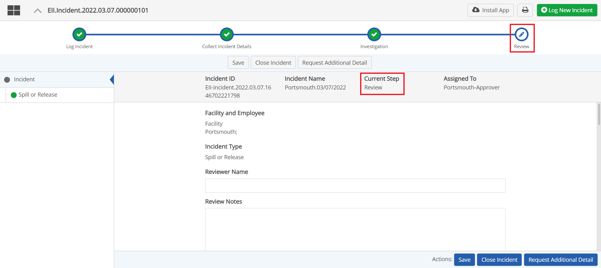

After an incident has been logged, all necessary documentation completed, and any corrective actions completed, the incident may be closed.
It may also be possible to close an incident at any step in the process, as long as any required fields have been completed and you have the permission. If the incident was sent for investigation, an incident manager may be assigned to review it before closing the incident.
To close an incident:
In the confirmation dialog, click Yes to confirm that you want to close the incident.
Closing the incident will also close all other processes that are part of the workflow. Note that if any corrective actions have not been completed, they will be automatically marked complete when you close the incident.
To complete the review step before closing an incident:
Complete the review fields provided in the forms.

Other actions you may take (depending on the action buttons available) include: